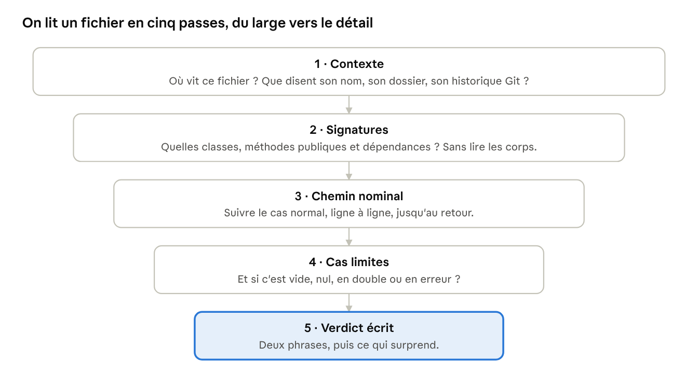
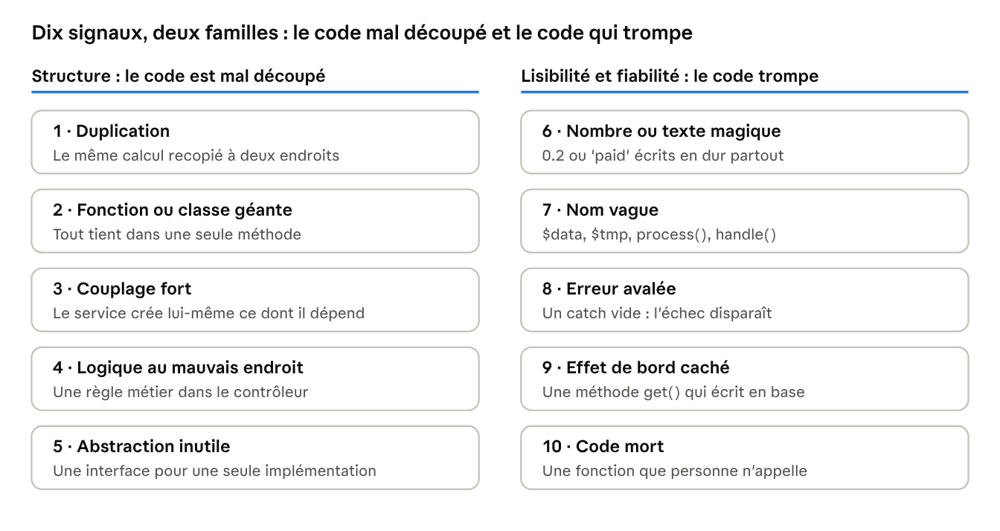
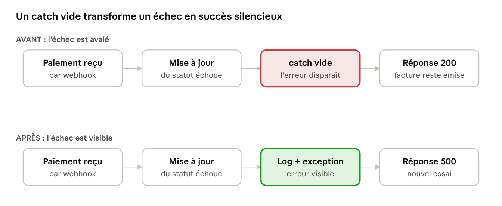
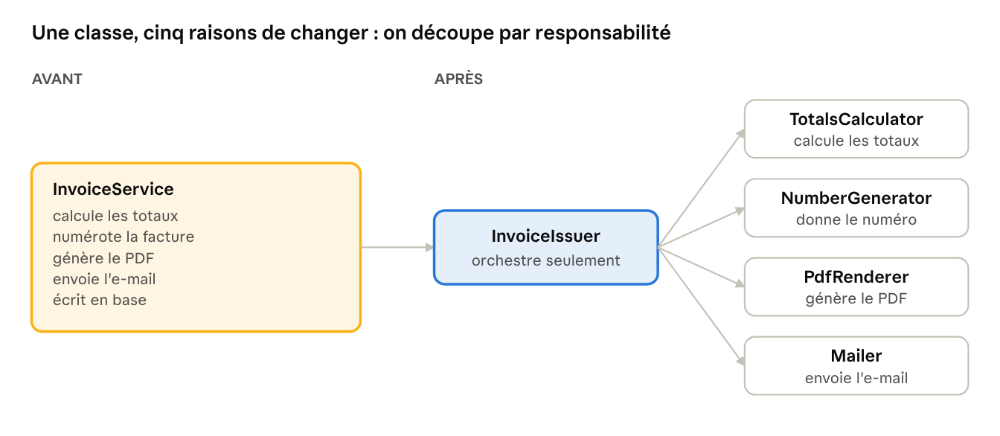
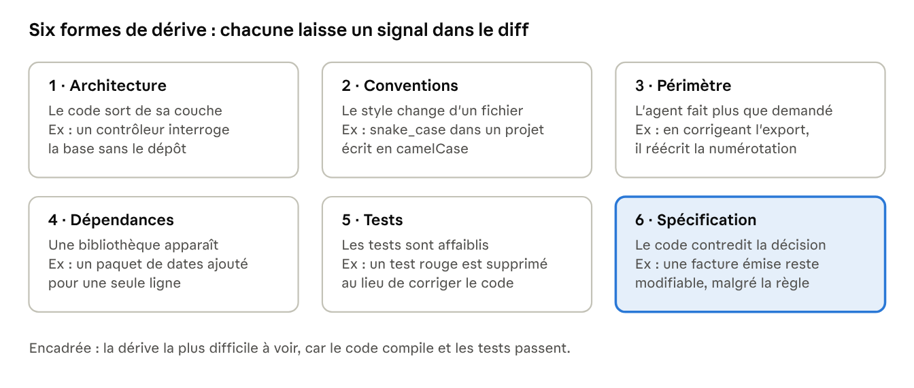
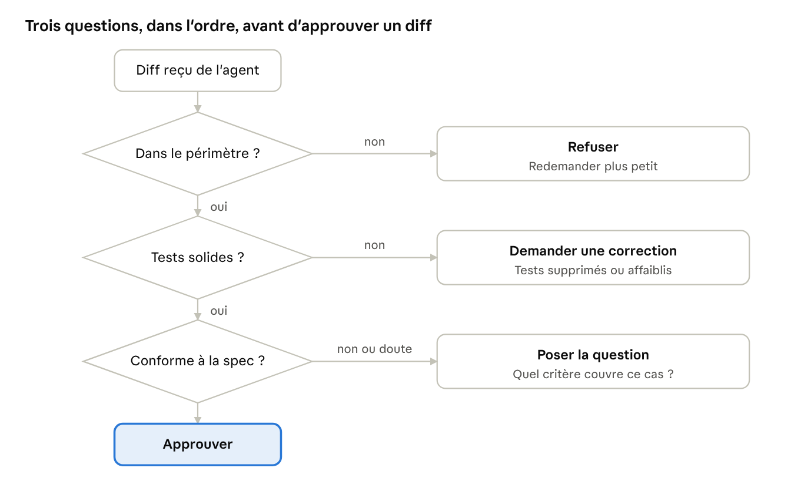
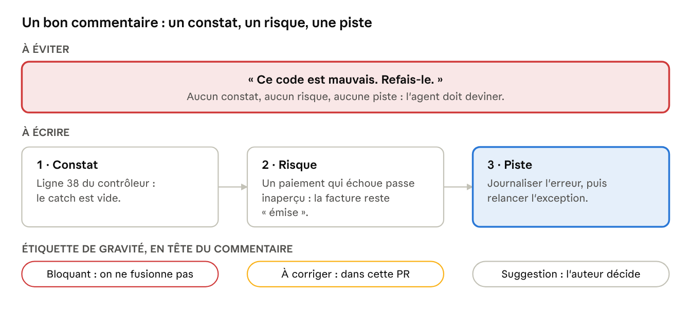

Module 2 : lire le code et reconnaître le mauvais code
Ce que vous saurez faire
Ce module est le cœur du cursus : un agent IA écrit du code en quelques minutes, et la valeur d'un orchestrateur tient dans sa capacité à voir ce qui ne va pas. Lire du code se travaille comme un sport : par la pratique, avec une méthode. Vous apprendrez la méthode, les signaux à repérer et la manière de formuler votre avis.
À la fin du module, vous saurez :
- lire un fichier inconnu et dire en deux phrases ce qu'il fait ;
- reconnaître et nommer dix signaux de mauvais code (les code smells) ;
- utiliser SOLID, DRY, KISS et YAGNI comme grille de lecture, sans en faire des dogmes ;
- repérer les six formes de dérive d'un agent ;
- relire un diff et décider : approuver, demander une correction ou refuser ;
- rédiger un commentaire de revue clair : constat, risque, suggestion.
| Prérequis | Le module 1 : trajet d'une requête, API, base de données, Git. |
| Durée estimée | 14 heures, sur deux semaines, dont au moins 5 heures de lecture de code réel. |
| Lien avec Facturo | Tous les extraits viennent du module Facturation : calcul, émission, numérotation. |
| Entraînement | Le mini-jeu Chasse aux dérives (jeu en ligne) : dix cas de relecture avec explication. Jouez-y après chaque leçon. |
Le code des extraits est volontairement court. Si vous ne connaissez pas PHP, ce n'est pas grave : le but est de lire la forme, les noms et la logique, pas de maîtriser la syntaxe.
Leçon 2.1 · Lire un fichier inconnu en cinq passes
Un agent vous livre un fichier de 200 lignes. Si vous le lisez de haut en bas, vous vous noyez dans le détail avant de comprendre l'intention. Les bons relecteurs vont du large vers le détail, en cinq passes.
Chaque passe répond à une seule question. Les trois premières prennent quelques minutes et ne demandent presque aucune logique.

Lire le schéma
- Partez du haut : la première passe est la plus large et la moins coûteuse.
- Descendez d'une marche à la fois. Chaque boîte est plus étroite, car vous regardez de moins en moins de code.
- Ne sautez pas de passe. Lire les cas limites sans connaître le chemin nominal produit de fausses alertes.
- La boîte colorée est la sortie : un verdict écrit, pas une impression.
Démonstration sur un fichier de Facturo
L'agent de code vient de livrer le service qui émet une facture. Voici le fichier.
final class InvoiceIssuer
{
public function __construct(
private InvoiceRepository $invoices,
private NumberGenerator $numbers,
private Clock $clock,
) {}
public function issue(int $invoiceId): Invoice
{
$invoice = $this->invoices->get($invoiceId);
if ($invoice->status() !== Status::Draft) {
throw new InvoiceNotDraft($invoiceId);
}
$invoice->assignNumber($this->numbers->next());
$invoice->markIssued($this->clock->now());
$this->invoices->save($invoice);
return $invoice;
}
}| Passe | Ce que vous faites | Ce que vous constatez |
|---|---|---|
| 1. Contexte | Lire le chemin, le nom, git log | Le fichier est dans Facturation/Application : c'est un cas d'usage. L'agent l'a ajouté ce matin, avec son test. |
| 2. Signatures | Lire le constructeur et les méthodes publiques | Trois dépendances : dépôt, générateur de numéros, horloge. Une seule méthode publique : issue(). |
| 3. Chemin nominal | Suivre le cas normal | Charge la facture, vérifie qu'elle est en brouillon, lui donne un numéro, la marque émise, l'enregistre. |
| 4. Cas limites | Poser les questions qui fâchent | Facture introuvable : que fait get() ? Deux émissions en même temps : deux numéros identiques ? Facture sans ligne : rien ne l'empêche ici. |
| 5. Verdict | Écrire deux phrases | « Ce service fait passer une facture de brouillon à émise, avec son numéro. Il ne protège ni la concurrence ni la facture vide. » |
Le verdict de la passe 5 devient immédiatement une demande à l'agent : « Entoure l'émission d'une transaction et refuse une facture sans ligne. Ajoute les deux tests. » Vous n'avez écrit aucune ligne de code, et vous avez trouvé deux vrais défauts.
À retenir
- Lisez du large vers le détail : contexte, signatures, chemin nominal, cas limites, verdict.
- Un verdict tient en deux phrases. S'il n'y arrive pas, le fichier fait trop de choses.
- Le plus gros risque se cache dans les cas limites, pas dans le chemin nominal.
- Lisez aussi les tests : ils disent ce que l'agent a cru devoir protéger.
Erreurs fréquentes
- Commencer par la ligne 1 et lire tout, sans jamais prendre de recul.
- Juger le fichier sur son style plutôt que sur son comportement.
- Faire confiance au message de commit ou au résumé de l'agent sans ouvrir le code.
- Relire seulement le diff, sans ouvrir le fichier entier autour.
Leçon 2.2 · Dix signaux de mauvais code, première moitié : la structure
Un code smell (« mauvaise odeur ») est un signe que le code pose problème, même s'il fonctionne. Ce n'est pas une preuve de bug. C'est une alerte qui mérite un regard.
Les agents produisent ces signaux de façon régulière, car ils optimisent « ça marche » avant « c'est facile à changer ». Voici les dix, en deux familles. Cette leçon traite la première, la suivante la seconde.

Lire le schéma
- Les cinq boîtes de gauche concernent le découpage : où se trouve chaque morceau de logique.
- Les cinq de droite concernent la lecture : un lecteur pressé peut se tromper ou être trompé.
- Chaque boîte donne un symptôme court. Cherchez-le dans les diffs que vous relisez.
- Un seul signal ne condamne pas un fichier. Trois ou quatre ensemble, oui.
1 · Duplication
Le même calcul existe à deux endroits. Le jour où la règle change, l'un des deux est oublié.
// FacturationController.php
$ttc = round($ht * (1 + $taux / 100), 2);
// PdfExporter.php
$ttc = round($ht * (1 + $taux / 100), 2);Après : la règle vit dans la facture, et tout le monde l'appelle.
// Invoice.php
public function totalTtc(): Money
{
return $this->totalHt->plusPercent($this->vatRate);
}Attention : DRY (Don't Repeat Yourself) vise la duplication de connaissance, pas de lignes. Deux blocs qui se ressemblent mais évoluent pour des raisons différentes peuvent rester séparés.
2 · Fonction ou classe géante
Une méthode fait tout. On ne peut ni la tester par morceaux, ni la relire sans y passer vingt minutes.
public function create(Request $r): Response
{
// 1. valider la requête
// 2. charger le client
// 3. calculer lignes, TVA et totaux
// 4. enregistrer en base
// 5. envoyer l'e-mail
// 6. construire la réponse JSON
}Ce squelette montre six responsabilités dans une seule méthode, souvent longue de plus de 150 lignes. Après : un cas d'usage court qui délègue.
public function __invoke(CreateInvoiceCommand $cmd): Invoice
{
$client = $this->clients->get($cmd->clientId);
$invoice = Invoice::draft($client, $cmd->lines);
$this->invoices->save($invoice);
return $invoice;
}La validation reste à l'entrée de l'API, l'e-mail passe par un événement, la réponse JSON par un transformateur.
3 · Couplage fort
Le service construit lui-même ses dépendances. On ne peut plus les remplacer, donc plus les tester sans envoyer de vrais e-mails.
final class InvoiceIssuer
{
public function issue(Invoice $invoice): void
{
$mailer = new SmtpMailer('smtp.facturo.fr');
$mailer->send($invoice->clientEmail(), 'Votre facture');
}
}Après : la dépendance arrive de l'extérieur, derrière une interface.
final class InvoiceIssuer
{
public function __construct(private Mailer $mailer) {}
public function issue(Invoice $invoice): void
{
$this->mailer->send($invoice->clientEmail(), 'Votre facture');
}
}En test, on passe un faux Mailer qui note les envois. En production, Symfony injecte le vrai.
4 · Logique au mauvais endroit
Une règle métier se retrouve dans le contrôleur, le composant React ou la requête SQL. C'est la dérive la plus fréquente chez les agents.
// FacturationController.php
$invoice->dateEcheance = $issuedAt->modify('+30 days');Le délai de 30 jours est une règle de Facturo. Elle appartient à la facture, pas au contrôleur.
// Invoice.php
public function markIssued(DateTimeImmutable $at): void
{
$this->issuedAt = $at;
$this->dueDate = $at->modify('+30 days');
$this->status = Status::Issued;
}Si demain Marie Giraud demande un délai de 45 jours pour ses clients, une seule méthode change.
5 · Abstraction inutile
L'agent ajoute des couches « au cas où » : interface, classe abstraite, usine. Pour une seule implémentation, c'est du bruit.
interface NumberGeneratorInterface {}
abstract class AbstractNumberGenerator implements NumberGeneratorInterface {}
final class DefaultNumberGenerator extends AbstractNumberGenerator {}
final class NumberGeneratorFactory {}Après : une classe, un rôle. On extraira une interface le jour où une deuxième implémentation existera.
final class InvoiceNumberGenerator
{
public function next(int $year): string { /* FAC-2026-0001 */ }
}Ce principe s'appelle YAGNI (You Aren't Gonna Need It) : ne construisez pas ce dont personne n'a besoin aujourd'hui.
À retenir
- Un smell est une alerte, pas un verdict. Il mérite une question à l'agent.
- Duplication, fonction géante, couplage, logique mal placée et abstraction inutile touchent le découpage.
- Demandez toujours : « Où cette règle doit-elle vivre ? »
Erreurs fréquentes
- Fusionner deux blocs qui se ressemblent mais ne changent pas pour la même raison.
- Accepter une couche d'abstraction parce qu'elle « fait propre ».
- Mesurer la qualité au nombre de lignes plutôt qu'au nombre de responsabilités.
Leçon 2.3 · Dix signaux de mauvais code, seconde moitié : la lecture et la fiabilité
Ces cinq signaux ne gênent pas forcément le fonctionnement aujourd'hui. Ils trompent le lecteur ou cachent les pannes de demain. Ce sont souvent ceux qui passent inaperçus en relecture rapide.
6 · Nombres et textes magiques
Une valeur est écrite en dur, sans nom. On ne sait ni d'où elle vient, ni où d'autre elle apparaît.
if ($invoice->status === 'paid') { /* ... */ }
$ttc = $ht * 1.2;Le 1.2 cache que Facturo gère aussi 10 % et 5,5 %. Le texte 'paid' accepte toutes les fautes de frappe. Après : des noms, à un seul endroit.
enum Status: string
{
case Draft = 'draft';
case Issued = 'issued';
case Paid = 'paid';
case Cancelled = 'cancelled';
}
const DEFAULT_VAT_RATE = 20;7 · Noms vagues
Un nom doit dire ce que fait le code, pas comment. process, handle, data, tmp, manager ne disent rien.
public function process(array $data): array
{
$tmp = [];
foreach ($data as $d) { /* ... */ }
return $tmp;
}Après : on lit l'intention sans ouvrir le corps.
public function computeTotals(array $lines): TotalsTest simple : si vous avez besoin du mot « et » pour décrire une fonction, elle fait deux choses.
8 · Erreurs avalées
Un catch vide, ou un catch qui ne fait que renvoyer « ok ». L'échec disparaît, et personne ne sait que quelque chose a cassé.
try {
$this->invoices->markPaid($id);
} catch (\Throwable $e) {
}
return new Response('ok', 200);Si Marie Giraud règle sa facture et que la mise à jour échoue, Facturo répond « tout va bien » au service de paiement. La facture reste « émise » et Marie reçoit une relance injuste.

Lire le schéma
- La ligne du haut montre le code défectueux : l'échec du statut est capturé par un
catchvide (boîte rouge). - La réponse 200 dit au service de paiement que tout s'est bien passé. Il n'insistera pas.
- La ligne du bas montre la correction : l'erreur est journalisée puis relancée (boîte verte).
- La réponse d'erreur permet un nouvel essai, donc la facture finit par passer à « payée ».
Le code corrigé :
try {
$this->invoices->markPaid($id);
} catch (\Throwable $e) {
$this->logger->error('markPaid failed', ['invoice' => $id, 'error' => $e]);
throw $e;
}9 · Effets de bord cachés
Une fonction dont le nom promet de lire fait aussi écrire. Le lecteur ne s'y attend pas, et un simple affichage modifie des données.
public function getInvoice(int $id): Invoice
{
$invoice = $this->repo->find($id);
$invoice->markViewed();
$this->repo->save($invoice);
return $invoice;
}Après : la lecture reste une lecture, l'écriture a son propre nom.
public function getInvoice(int $id): Invoice
{
return $this->repo->get($id);
}
public function recordView(int $id): void { /* ... */ }C'est le même principe que les méthodes HTTP sûres du module 1 : un GET ne doit rien modifier.
10 · Code mort
Du code que plus rien n'appelle, gardé « au cas où ». Les agents le laissent souvent après une refonte.
// ancienne version, gardée au cas où
public function oldComputeTotal(array $lines): float { /* ... */ }Le code mort trompe : on le lit, on le croit utilisé, on le modifie pour rien. Supprimez-le. Git garde l'historique.
À retenir
- Un nom, un type ou une constante bien placés remplacent un commentaire.
- Toute erreur capturée doit être soit traitée, soit journalisée et relancée. Jamais ignorée.
- Une méthode qui s'appelle « lire » ne doit rien écrire.
- Demandez à l'agent de supprimer ce qui n'est plus utilisé.
Erreurs fréquentes
- Accepter un
catchvide parce qu'« il ne plante plus ». C'est pire : la panne devient invisible. - Renommer sans relire les tests et les appels : un renommage doit rester complet.
- Laisser un agent « nettoyer » en supprimant aussi du code utile. Vérifiez avec la recherche dans le projet.
Leçon 2.4 · SOLID, DRY, KISS, YAGNI : une grille de lecture
Ces quatre sigles sont des questions à poser, pas des lois à appliquer. Vous n'avez pas à coder en SOLID. Vous devez savoir reconnaître quand un code les viole, et quand les respecter coûterait plus cher que ce que ça rapporte.
Prenons un service que l'agent aurait écrit dans un premier jet.
final class InvoiceService
{
public function issue(int $id): void
{
$row = $this->db->fetch('SELECT * FROM invoice WHERE id = ?', [$id]);
$total = 0;
foreach ($row['lines'] as $l) { $total += $l['qty'] * $l['price']; }
$number = 'FAC-' . date('Y') . '-' . $this->nextNumber();
$pdf = (new Dompdf())->loadHtml($this->render($row, $total));
mail($row['email'], 'Votre facture', 'Ci-joint', $pdf);
$this->db->exec('UPDATE invoice SET status = ?, number = ?', ['issued', $number]);
}
}Cette classe change si le calcul change, si le format du numéro change, si le PDF change, si l'e-mail change. Cinq raisons de changer, donc cinq risques de casser les quatre autres.

Lire le schéma
- À gauche, la classe d'origine : cinq responsabilités empilées dans une seule boîte.
- La flèche montre le découpage. On ne réécrit pas la logique, on la range.
- Au centre,
InvoiceIssuerne calcule rien. Il appelle les autres dans l'ordre (c'est le fichier de la leçon 2.1). - À droite, chaque classe a une seule raison de changer et peut être testée seule.
SOLID en cinq questions
SOLID regroupe cinq principes de conception objet. Chacun se lit comme une question.
| Lettre | Principe | Question à poser en relecture | Exemple Facturo |
|---|---|---|---|
| S | Responsabilité unique | Cette classe a-t-elle une seule raison de changer ? | Le calcul de TVA change avec la loi, le PDF avec le logo : deux classes. |
| O | Ouvert / fermé | Ajouter un cas oblige-t-il à modifier du code qui marche ? | Un nouvel export (CSV, FEC) est une nouvelle classe, pas un if de plus. |
| L | Substitution de Liskov | Peut-on remplacer une classe par sa sœur sans surprise ? | Un FakeMailer de test doit se comporter comme SmtpMailer pour l'appelant. |
| I | Ségrégation des interfaces | L'interface impose-t-elle des méthodes inutiles à ceux qui l'utilisent ? | Mailer expose send() et rien d'autre. |
| D | Inversion des dépendances | Le métier dépend-il d'un détail technique ? | InvoiceIssuer dépend de l'interface Mailer, pas de SmtpMailer. |
En pratique, S et D se repèrent le plus facilement dans un diff. O, L et I demandent plus d'expérience. Commencez par S et D.
Les trois autres sigles
| Sigle | Sens | La question | Le piège |
|---|---|---|---|
| DRY | Don't Repeat Yourself | Cette règle existe-t-elle à un seul endroit ? | Fusionner du code qui se ressemble mais change pour des raisons différentes. |
| KISS | Keep It Simple | Y a-t-il plus simple qui fasse la même chose ? | Confondre simple et court : une ligne énigmatique n'est pas simple. |
| YAGNI | You Aren't Gonna Need It | Ce code répond-il à un besoin d'aujourd'hui ? | Ne rien prévoir du tout alors qu'un besoin certain arrive la semaine prochaine. |
Quand les principes se contredisent
DRY pousse à factoriser. KISS et YAGNI poussent à attendre. Une heuristique courante dit de tolérer deux copies et de factoriser à la troisième, quand la forme commune est enfin visible. Ce n'est pas une loi, c'est un repère.
En relecture, tranchez avec une question : « Si cette règle change, combien d'endroits dois-je modifier ? » Un seul : bien. Deux ou trois et aucun test ne vous prévient : refusez.
Et « Clean Code » ?
« Clean Code » désigne un ensemble de pratiques d'écriture popularisées par un livre du même nom : des noms qui disent l'intention, des fonctions courtes qui font une seule chose, peu de paramètres, pas de duplication, des commentaires qui expliquent le pourquoi plutôt que de répéter le code, des erreurs traitées plutôt qu'avalées. C'est la grille des leçons 2.2 et 2.3 vue depuis l'auteur : les dix signaux de mauvais code sont les symptômes que ces pratiques évitent, et SOLID en est le versant objet.
Avec des agents, l'enjeu double. Un agent lit votre code comme contexte avant de l'étendre, et il tend à imiter le style qu'il y trouve. Des noms vagues et des fonctions géantes lui donnent un mauvais modèle ; un code propre rend ses propositions plus justes et vos relectures plus rapides. Comme SOLID, c'est une grille de lecture, pas un dogme : éclater une logique simple en dix fichiers « pour faire court » viole KISS.
À retenir
- SOLID, DRY, KISS et YAGNI sont des questions de relecture, pas des objectifs.
- Commencez par S (une raison de changer) et D (le métier ne dépend pas d'un détail).
- Quand deux principes se contredisent, mesurez le coût du changement futur.
- « Clean Code » rassemble les pratiques des leçons 2.2 à 2.4 : noms clairs, fonctions courtes, pas de duplication. Un code propre est aussi un meilleur contexte pour un agent.
Erreurs fréquentes
- Exiger SOLID partout, y compris sur un script de dix lignes.
- Citer un sigle pour imposer son avis. Un commentaire de revue décrit un risque concret.
- Prendre un fichier court pour un fichier simple.
Leçon 2.5 · Les six formes de dérive d'un agent
Une dérive est un écart entre ce que vous avez demandé et ce que l'agent a livré. Le code peut être propre, testé et pourtant faux pour votre projet. Cette leçon donne les six formes à chercher, avec le signal qui les trahit.
Un agent ne dérive pas par mauvaise volonté. Il combine ce qu'il voit dans le dépôt et ce qu'il devine du reste. Tout ce qui n'est pas écrit, il l'invente.

Lire le schéma
- Les trois boîtes du haut se voient souvent d'un coup d'œil dans le diff : couche, style, taille de la modification.
- Les trois du bas demandent d'ouvrir des fichiers précis : le fichier de dépendances, le dossier de tests, la spécification.
- Chaque boîte donne un exemple tiré de Facturo. Cherchez la même forme dans vos propres relectures.
- La boîte encadrée est la plus dangereuse : rien ne casse, mais l'application ne fait plus ce qui a été décidé.
Repérer chaque dérive, et l'empêcher
| Dérive | Signal dans le diff | Question à poser à l'agent | Garde-fou |
|---|---|---|---|
| Architecture | Un use d'une couche qui ne devrait pas être connue | « Pourquoi ce contrôleur appelle-t-il la base ? » | Règles d'architecture écrites et vérifiées en CI |
| Conventions | Nommage ou format différent du reste du dossier | « Quel fichier voisin as-tu suivi ? » | Formateur et analyseur statique automatiques |
| Périmètre | Des fichiers sans rapport avec la demande | « Pourquoi ce fichier change-t-il ? » | Une demande, un objectif, une branche |
| Dépendances | Une ligne en plus dans composer.json ou package.json | « Que fait ce paquet que le code existant ne fait pas ? » | Liste de dépendances validée à la main, audit en CI |
| Tests | Des tests supprimés, commentés, ou des assertions plus faibles | « Pourquoi ce test a-t-il changé ? » | Règle : tout test modifié est justifié dans la description |
| Spécification | Un comportement qui contredit un critère d'acceptation | « Quel critère couvre ce cas ? » | Critères écrits avant le code, test dérivé par un humain |
Trois commandes pour inspecter un diff
Avant de lire une ligne de code, regardez la forme de la modification. Ces trois commandes prennent une minute.
git diff --stat main...feature/echeance # périmètre : combien de fichiers ?
git diff main...feature/echeance -- composer.json # dépendances ajoutées ?
git diff main...feature/echeance -- tests/ # tests supprimés ou affaiblis ?Exemple : une dérive en chaîne
Vous demandez à l'agent : « Permettre un délai de paiement propre à chaque client. » Il livre une branche qui touche quatorze fichiers. Le --stat montre que l'export comptable a changé : périmètre.
Vous ouvrez composer.json : un paquet de calcul de dates est apparu : dépendance. Dans tests/, un test de numérotation a été supprimé : tests. Trois dérives en deux minutes, sans avoir lu la logique métier.
La décision la plus saine est de refuser la branche et de redemander plus petit : une demande, un objectif.
À retenir
- Six dérives à connaître : architecture, conventions, périmètre, dépendances, tests, spécification.
- Les cinq premières se voient dans le diff. La sixième demande de relire la décision d'origine.
- Un garde-fou automatique vaut mieux qu'une vigilance humaine. Les deux se cumulent.
Erreurs fréquentes
- Juger la branche sur ses tests verts alors que l'agent a modifié les tests.
- Laisser passer « une petite amélioration en passant ». Elle change le périmètre de la revue.
- Ne pas relire la spécification d'origine avant de valider un comportement.
Leçon 2.6 · Relire un diff d'agent : trois cas
Un diff montre ce qui change entre deux versions. C'est la pièce que vous lisez le plus souvent : l'agent a travaillé, vous jugez ce qu'il propose. Trois cas, trois décisions : approuver, refuser, poser une question.
Pour chaque cas, appliquez les mêmes trois questions, dans le même ordre.

Lire le schéma
- Partez du haut et suivez la colonne de gauche. Chaque losange est une question, la réponse « non » sort vers la droite.
- Le périmètre vient en premier : un diff trop large ne se relit pas, donc on le refuse avant de lire le détail.
- Les tests viennent ensuite : ils sont la preuve que l'agent propose. S'ils sont faibles, il n'y a rien à juger.
- La conformité à la spécification est en dernier. En cas de doute, la bonne réponse est de poser la question.
Cas A : le diff qu'on approuve
Demande : « La date d'échéance doit être calculée à l'émission, à 30 jours. »
--- a/src/Facturation/Domain/Invoice.php
+++ b/src/Facturation/Domain/Invoice.php
$this->issuedAt = $at;
+ $this->dueDate = $at->modify('+30 days');
$this->status = Status::Issued;
--- a/tests/Facturation/InvoiceTest.php
+++ b/tests/Facturation/InvoiceTest.php
+ public function testDueDateIsThirtyDaysAfterIssue(): void
+ {
+ $invoice = InvoiceFactory::draft();
+ $invoice->markIssued(new DateTimeImmutable('2026-03-01'));
+ self::assertEquals('2026-03-31', $invoice->dueDate()->format('Y-m-d'));
+ }Verdict : approuver. Deux fichiers, une demande. La règle vit dans la facture, pas dans un contrôleur. Le test vérifie une date précise, pas seulement « non nulle ».
Cas B : le diff qu'on refuse
Demande : « Arrondir les montants au centime dans l'export CSV. »
--- a/composer.json
+++ b/composer.json
+ "moneyphp/money": "^4.0",
--- a/src/Export/CsvExporter.php
- $ttc = $ht * (1 + $taux / 100);
+ $ttc = Money::EUR($ht)->multiply(1 + $taux / 100)->getAmount();
--- a/src/Facturation/NumberGenerator.php
- return sprintf('FAC-%d-%04d', $year, $seq);
+ return sprintf('FAC-%d-%05d', $year, $seq);
--- a/tests/Facturation/NumberGeneratorTest.php
- public function testFormatIsFacYearFourDigits(): voidVerdict : refuser. Il y a quatre problèmes dans ce diff :
- une dépendance ajoutée pour un problème que
round($x, 2)résout ; - une modification du format de numéro, sans rapport avec l'export : périmètre ;
- ce nouveau format casse la règle « FAC-2026-0001 » de Facturo ;
- le test qui l'aurait signalé a été supprimé.
Message à l'agent : « Refus. Ne change que l'arrondi de l'export, sans nouvelle dépendance, et ne touche pas à la numérotation. Restaure le test supprimé. »
Cas C : le diff ambigu
Demande : « Ne plus envoyer de relance quand la facture est payée. »
public function send(Invoice $invoice): void
{
+ if ($invoice->status() === Status::Paid) {
+ return;
+ }
$this->mailer->send($invoice->clientEmail(), 'Relance');
}Verdict : poser la question. Le diff fait ce qu'on a demandé, il est court et lisible. Mais il laisse deux trous :
- une facture « annulée » ou « brouillon » recevrait encore une relance. La règle n'est pas écrite : c'est à vous, product owner, de trancher ;
- aucun test n'accompagne la modification.
Message à l'agent : « Seules les factures émises doivent être relancées. Remplace la condition par un test sur le statut « émise » et ajoute un test par statut. » Vous avez posé la question, puis donné la règle.
| Cas | Décision | Raison en une phrase |
|---|---|---|
| A | Approuver | Une demande, une règle bien placée, un test précis. |
| B | Refuser | Dépendance, numérotation touchée et test supprimé : trois dérives. |
| C | Poser la question | Code correct, mais une règle métier non écrite et pas de test. |
À retenir
- Trois questions, dans l'ordre : périmètre, tests, conformité.
- Refuser est une décision normale. Un refus bien formulé coûte une minute et évite une dette.
- Quand une règle métier manque, c'est vous qui la fournissez. L'agent ne peut pas la deviner.
Erreurs fréquentes
- Approuver parce que le diff « a l'air propre » sans compter les fichiers touchés.
- Corriger soi-même un diff refusé : l'agent n'apprend pas, et vous perdez du temps.
- Demander « améliore ça » sans dire quoi. Une consigne floue produit un nouveau diff flou.
Leçon 2.7 · Écrire une revue de PR utile
Une PR (pull request, demande de fusion) propose d'ajouter une branche à la version principale. La revue est l'étape où vous dites oui, non ou pas encore. Un bon commentaire fait gagner un aller-retour. Un mauvais en fait perdre trois.
Un agent n'a pas de mémoire de la discussion. Chaque commentaire doit donc se suffire à lui-même : où, quoi, pourquoi, que faire.

Lire le schéma
- En haut, le commentaire à éviter : il juge sans rien dire. L'auteur ne sait ni où, ni pourquoi, ni comment corriger.
- Au milieu, la bonne forme en trois temps : ce qu'on voit, ce qu'on risque, ce qu'on propose.
- En bas, une étiquette de gravité placée en tête. Elle dit si la remarque bloque la fusion.
- La dernière boîte est colorée : c'est la piste qui permet à l'agent d'agir sans vous reposer de question.
Un modèle à copier
[bloquant | à corriger | suggestion] fichier:ligne
Constat : ce que je vois.
Risque : ce qui peut arriver à Facturo ou à un client.
Piste : ce que je propose.Exemple : la revue d'une PR de paiement
La PR s'intitule « Marquer la facture payée à réception du webhook ». Elle touche quatre fichiers. Voici cinq commentaires rédigés avec le modèle.
| Où | Étiquette | Commentaire |
|---|---|---|
PaymentWebhookController.php:38 | Bloquant | Le catch est vide. Si la mise à jour échoue, Facturo répond 200 et le prestataire n'insiste pas. La facture reste « émise » alors que Marie a payé. Journalise l'erreur puis relance l'exception. |
PaymentWebhookController.php:22 | Bloquant | Le webhook peut arriver deux fois pour un même paiement. Que se passe-t-il à la seconde réception ? Rends markPaid idempotent et ajoute un test avec deux appels. |
Invoice.php:91 | À corriger | Le statut est comparé au texte 'paid'. Utilise Status::Paid, comme dans le reste du fichier. |
composer.json | À corriger | Le paquet ajouté sert sur une seule ligne. Utilise la fonction standard parse_url() et retire la dépendance. |
PaymentWebhookControllerTest.php | Suggestion | Bon test pour la signature invalide. Tu peux le passer en jeu de données pour couvrir d'autres signatures. |
Le dernier commentaire est un compliment avec une piste. Dire ce qui est bien appris à l'agent (et à vos collègues) ce qu'il faut refaire.
Avant / après : réécrire un commentaire
| Commentaire faible | Ce qui manque | Version utile |
|---|---|---|
| « Pas clair. » | Où ? Quoi ? | « computeTotals renvoie un tableau sans clés nommées. Renvoie un objet Totals pour qu'on lise totals->ttc. » |
| « Ça ne respecte pas SOLID. » | Le risque concret | « InvoiceService envoie l'e-mail et génère le PDF. Un changement de logo risque de casser l'envoi. Extrais PdfRenderer. » |
| « Pourquoi ce choix ? » | La question réelle | « Pourquoi une transaction ici et pas dans cancel() ? Les deux modifient la facture. » |
Cinq règles de relecteur
- Un commentaire, une idée. Deux problèmes, deux commentaires.
- Parlez du code, pas de l'auteur. Pas « tu as oublié », mais « ce cas n'est pas géré ».
- Citez la règle du projet quand elle existe : « voir la règle de numérotation continue ».
- Terminez par une décision nette : « Demande de modifications » ou « Approuvé ».
- Si vous hésitez entre bloquant et suggestion, demandez-vous : « Est-ce que je suis prêt à voir ça en production ? »
S'entraîner
Le mini-jeu Chasse aux dérives (jeu en ligne) propose des cas de relecture avec explication. Jouez-y après cette leçon, puis réécrivez vous-même vos réponses sous la forme constat, risque, piste.
À retenir
- Un commentaire utile se suffit à lui-même : où, constat, risque, piste.
- L'étiquette de gravité évite que tout paraisse égal.
- Un compliment précis est un commentaire de revue à part entière.
Erreurs fréquentes
- Écrire des commentaires qui citent un sigle (SOLID, DRY) sans montrer le risque concret.
- Tout marquer « bloquant » : l'auteur ne sait plus ce qui compte.
- Reformuler dix fois la même remarque au lieu de donner une piste claire.
Atelier guidé : relire une branche livrée par un agent
Objectif : produire une vraie revue écrite, du début à la fin, sur une petite fonctionnalité de Facturo. Comptez deux heures.
Matériel : un dépôt Facturo (ou tout petit projet Symfony), un agent de code, un terminal, un éditeur de texte.
- Choisissez la demande. Prenez : « Ajouter un champ « référence de commande » sur la facture, affiché sur le PDF. » Écrivez-la en trois phrases, avec des critères d'acceptation : la référence est facultative, limitée à 40 caractères, jamais modifiable après l'émission.
- Lancez l'agent sur une branche dédiée,
feature/reference-commande. Ne l'aidez pas. - Inspectez la forme du diff avec les trois commandes de la leçon 2.5. Notez le nombre de fichiers et les surprises.
- Lisez le fichier principal en cinq passes (leçon 2.1). Écrivez le verdict en deux phrases.
- Cherchez les dix signaux des leçons 2.2 et 2.3, puis les six dérives de la leçon 2.5. Remplissez la grille ci-dessous.
- Rédigez au moins trois commentaires avec le modèle constat, risque, piste, et une étiquette de gravité pour chacun.
- Renvoyez la revue à l'agent, laissez-le corriger, puis relisez le nouveau diff avec les trois questions de la leçon 2.6.
- Concluez par une décision écrite : approuvé, modifications demandées ou refusé, avec une phrase de raison.
Grille à copier :
| Contrôle | Résultat | Preuve (fichier, ligne) |
|---|---|---|
| Périmètre : nombre de fichiers touchés | ||
| Dépendances ajoutées | ||
| Tests ajoutés, modifiés ou supprimés | ||
| Règle de la référence respectée (40 caractères, non modifiable après émission) | ||
| Signaux de mauvais code repérés (parmi les dix) | ||
| Dérives repérées (parmi les six) | ||
| Décision et raison en une phrase |
Résultat attendu : une revue de trois commentaires au moins, un verdict en deux phrases et une décision. Gardez-la : elle servira de modèle pour le module 5.
Exercices
Exercice 1 · Nommer le signal
Pour chaque extrait, donnez le ou les signaux de mauvais code (leçons 2.2 et 2.3).
// a
$tmp = $d['a'] * 1.2;
// b
try { $this->invoices->markPaid($id); } catch (\Exception $e) { /* TODO */ }
// c
final class InvoiceManager { /* 600 lignes : calcul, PDF, e-mail, export */ }Corrigé
(a) Nombre magique (1.2) et nom vague ($tmp, $d). Facturo gère aussi 10 % et 5,5 %. (b) Erreur avalée : le catch ne fait rien, le TODO ne change rien. (c) Classe géante, et nom vague : Manager ne dit pas ce que fait la classe. Elle porte au moins quatre responsabilités.
Exercice 2 · Écrire un verdict
Lisez ce fichier avec les cinq passes, puis écrivez un verdict en deux phrases.
public function cancel(int $id): void
{
$invoice = $this->invoices->get($id);
$invoice->setStatus(Status::Cancelled);
$this->invoices->save($invoice);
}Corrigé
« Ce service passe n'importe quelle facture à annulée. Il ne vérifie pas le statut actuel : or une facture émise est immuable et ne peut être corrigée que par un avoir. » Au passage, la méthode setStatus() permet de contourner toutes les règles. Une méthode cancel() sur la facture, qui refuse l'annulation d'une facture émise, serait plus sûre.
Exercice 3 · Classer les dérives
Associez chaque observation à l'une des six dérives.
- a. Une ligne apparaît dans
composer.json. - b. Un contrôleur appelle
$pdo->query(...)directement. - c.
getTotaldevientget_totaldans un seul fichier. - d. Le test
testCannotEditIssuedInvoicea disparu. - e. L'agent a aussi modifié la numérotation en traitant l'export.
- f. Une facture émise peut de nouveau être modifiée, tous les tests sont verts.
Corrigé
a : dépendances. b : architecture. c : conventions. d : tests. e : périmètre. f : spécification. Le cas d et le cas f sont liés : l'agent a pu supprimer le test pour que le comportement interdit passe.
Exercice 4 · Rédiger un commentaire
Écrivez un commentaire de revue pour ce diff, avec une étiquette, un constat, un risque et une piste.
+ // InvoiceController.php:57
+ $total = 0;
+ foreach ($lines as $l) { $total += $l['qty'] * $l['price'] * 1.2; }
+ return $total;Corrigé
« [bloquant] InvoiceController.php:57. Constat : le calcul de TVA est écrit dans le contrôleur, avec le taux 1.2 en dur. Risque : Facturo gère aussi 10 % et 5,5 %. Une facture à taux réduit serait fausse, et le montant ne serait pas arrondi au centime. Piste : appelle Invoice::totalTtc(), qui lit le taux de la facture et arrondit. » Le commentaire cite le lieu, nomme le risque métier et indique le chemin.
Exercice 5 · Décider
L'agent résume sa PR : « Relance automatique à J+7. Trois fichiers modifiés, deux tests ajoutés. J'ai aussi supprimé un test d'export devenu inutile. » Que faites-vous ?
Corrigé
Demandez une correction. Le périmètre dépasse la demande (l'export n'a rien à voir avec la relance) et la suppression d'un test n'est pas justifiée autrement que par l'agent. Message : « Restaure le test d'export. S'il est réellement obsolète, explique pourquoi dans une PR séparée. » Les deux tests ajoutés sont un bon point : mentionnez-le.
Quiz
- Dans quel ordre lit-on un fichier inconnu ?
- Un
catchvide appartient à quelle famille de signaux ? - Que signifie le D de SOLID ?
- Quelle dérive est la plus difficile à repérer dans un diff ?
- Quelles sont les trois questions avant d'approuver un diff, dans l'ordre ?
- Que contient un bon commentaire de revue ?
Voir les réponses (après avoir répondu aux six questions)
| Question | Réponse | Pourquoi |
|---|---|---|
| Dans quel ordre lit-on un fichier inconnu ? | Contexte, signatures, chemin nominal, cas limites, verdict. | On va du large au détail, pour ne pas se noyer dans les lignes. |
Un catch vide appartient à quelle famille de signaux ? | Lisibilité et fiabilité : erreur avalée. | L'échec disparaît, et personne ne sait qu'il a eu lieu. |
| Que signifie le D de SOLID ? | Inversion des dépendances : le métier dépend d'interfaces, pas de détails techniques. | On peut remplacer l'e-mail ou la base, notamment en test. |
| Quelle dérive est la plus difficile à repérer dans un diff ? | La dérive de spécification. | Le code compile et les tests passent, mais le comportement contredit la décision. |
| Quelles sont les trois questions avant d'approuver un diff, dans l'ordre ? | Périmètre, tests, conformité à la spécification. | On va du plus rapide à vérifier au plus fin. |
| Que contient un bon commentaire de revue ? | Une étiquette, un constat, un risque et une piste. | L'agent peut agir sans poser de question. |
Checklist de fin de module
- Je lis un fichier inconnu en cinq passes et je rédige un verdict en deux phrases.
- Je reconnais les dix signaux de mauvais code et je sais donner un exemple de chacun.
- Je sais poser les questions SOLID, DRY, KISS et YAGNI sans les utiliser comme des dogmes.
- Je nomme les six formes de dérive et je sais où les chercher dans un diff.
- Je lance les trois commandes d'inspection avant de lire une ligne de code.
- Je décide : approuver, demander une correction, refuser ou poser une question.
- J'écris des commentaires avec une étiquette, un constat, un risque et une piste.
- J'ai terminé l'atelier et gardé ma revue comme modèle.
- J'ai joué à la Chasse aux dérives au moins une fois.
Sources
Pages consultées le 16 novembre 2026. Les dates sont celles affichées sur les pages.
- Code Smell, Martin Fowler (9 février 2006) : « A code smell is a surface indication that usually corresponds to a deeper problem in the system. » C'est la notion qui sous-tend les dix signaux des leçons 2.2 et 2.3.
- Yagni, Martin Fowler (26 mai 2015) : une capacité que l'on présume utile plus tard ne doit pas être construite maintenant.
- SOLID, Wikipédia (source secondaire) (dernière modification le 10 octobre 2026) : « introduced the basic principles of SOLID design in his 2000 paper » ; sigle forgé vers 2004 par Michael Feathers.
- The Relevance of SOLID, Robert C. Martin (18 octobre 2020) : « Depend in the direction of abstraction. High level modules should not depend upon low level details. » : le D de SOLID.
- Don't repeat yourself, Wikipédia (source secondaire) (dernière modification le 10 octobre 2026) : formulé dans The Pragmatic Programmer ; « Every piece of knowledge must have a single, unambiguous, authoritative representation within a system ».
- KISS principle, Wikipédia (source secondaire) (dernière modification le 5 novembre 2026) : principe qui privilégie la simplicité ; acronyme attribué à Kelly Johnson (Lockheed).
Vérifiés en ligne le 16 novembre 2026 : SOLID (principes introduits par Robert C. Martin dans un article de 2000, sigle forgé vers 2004 par Michael Feathers, d'après Wikipédia) ; DRY (Andy Hunt et Dave Thomas, The Pragmatic Programmer, 1999) ; KISS (attribué à Kelly Johnson, ingénieur chez Lockheed ; la Marine américaine le note en 1960). Non vérifié : l'article original de Martin sur SOLID (la page « Principles of OOD » de butunclebob.com est restée injoignable ; la définition du D est confirmée par un billet de Martin de 2020). La liste des dix signaux, la forme de la revue et l'heuristique de factoriser à la troisième répétition sont des repères de ce cours, pas des normes. Tous les extraits de code, la PR de paiement et les noms de classes sont des exemples écrits pour Facturo, application fictive. Le paquet moneyphp/money n'est cité qu'à titre d'illustration.